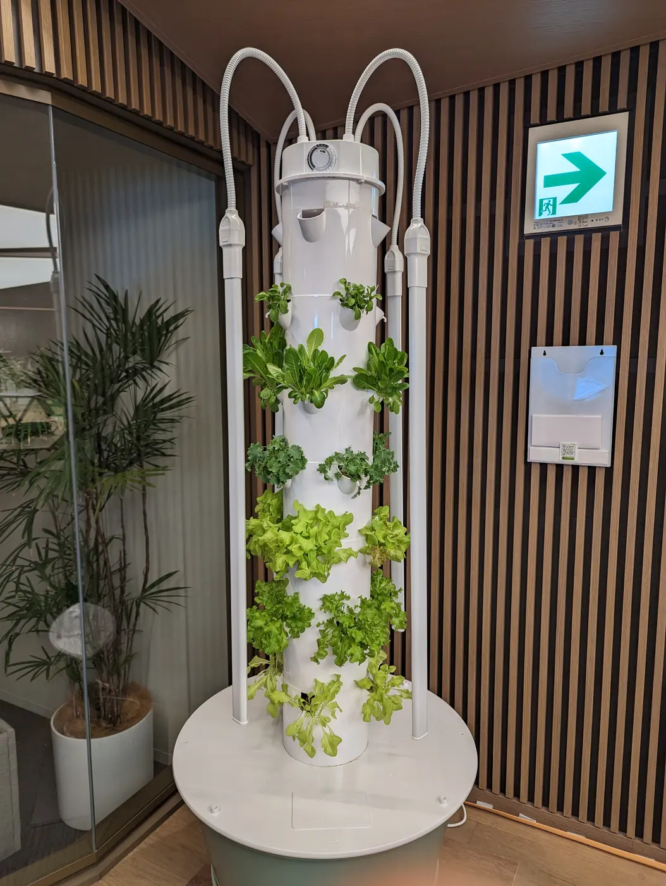

Create a visible, productive green space for employees and members.
Urban farming as a wellbeing, education, and ESG engagement tool.

Overview
A hydroponic tower in your office or coworking space is more than just plants — it is a conversation starter, a wellness feature, and a visible statement about sustainability. Members and employees can watch food grow in real time, harvest fresh greens for lunch, and participate in optional workshops. For coworking spaces, it is a distinctive amenity. For offices, it supports wellness and ESG initiatives with a minimal footprint.
Possible formats
A single tower in a common area or kitchen as a low-commitment starting point. A multi-tower installation with regular maintenance for larger spaces. Workshops and programming for employees or members — team-building, lunch-and-learns, or seasonal harvest events. We can scale up or down based on your interest and space.
Maintenance
Our tower systems run automatically — watering and lighting are on timers, so there is no daily upkeep for your team. We offer maintenance contracts that include regular visits to monitor plant health, top up nutrients, swap out crops, and keep everything running smoothly. Your staff can get involved as much or as little as they would like.